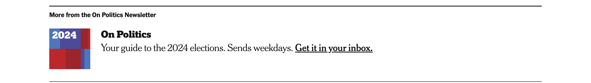
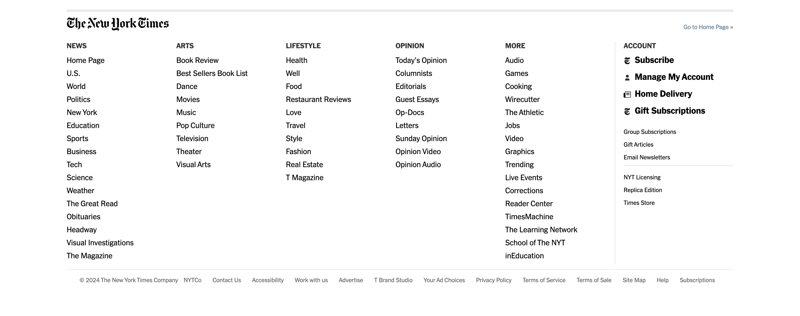

When Krissi Miles, the manager of absentee voting in Tuscaloosa County, Ala., began electronically issuing ballots to military service members yesterday, she was taking a routine step that’s part of a milestone for this election.
The first ballots have gone out.
“In just a few minutes, I will start issuing ballots for all the other applicants,” Miles told me over the phone today, very kindly and politely suggesting that I let her return to her work mailing out absentee ballots. “I have anywhere between 1,000 and 1,500, much more than I anticipated.”
As my little ticker above says, there are officially 54 days left in the fall campaign (count ’em!). But the fact that absentee ballots are going in the mail in Alabama, and that other states will soon follow suit with various forms of absentee, mail or early in-person voting, means that for a growing number of Americans, Election Day is practically here.
It’s a big deal for the campaigns, one that heralds a shift from simply persuading voters to turning them out. In a narrow election that is best described as a “game of inches,” the pool of voters who can still change their minds is about to start shrinking, because their ballots will be cast.
It’s also a new season of stress on the election system itself, one that is already being tested by lawsuits that have created complications and uncertainties for the workers who oversee it. At the same time, Donald Trump is stoking doubts about mail voting while his allies are trying to get his supporters to use that method of voting.
Michella Huff, the director of elections in Surry County, N.C., had some 544 absentee ballots just about ready to go out by mail on Friday — when that process was supposed to begin in North Carolina — but then the courts intervened.
On Monday, the State Supreme Court ruled that Robert F. Kennedy Jr.’s name needed to be removed from the ballots, meaning that every one of the complex packages Huff and her team prepared will need to be redone.
That probably means destroying the old ballots, Huff said, printing new ones, and dealing with the distrust of voters primed by false stories about election fraud.
“I had somebody send me a text: ‘I want to be present when the ballots are going to be destroyed, when’s that going to be?’” Huff said. “It’s one more piece to add to the layers of distrust about the process.”
In Pennsylvania, another issue over the status of third-party candidates has also slowed election workers’ ability to prepare mail ballots, said Forrest Lehman, the director of elections in Lycoming County.
“We can’t do a thing. We need to know exactly who is on and not on the ballot,” Lehman said. “If you work too far ahead, you’ll just end up crying into your beer later when the ballot changes.”
The kind of distrust Huff and other election workers have faced has been stoked for years by Trump and his allies, who have claimed — incorrectly and without evidence — that mail and absentee voting are rife with cheating.
Trump picked that back up over the weekend, when he posted on his social media site that a significant percentage of mail-in ballots in Pennsylvania were “fraudulent.”
It was a spurious claim — there are no ballots in Pennsylvania yet in the mail — and one that Lara Trump, the co-chair of the Republican National Committee and Mr. Trump’s daughter-in-law, struggled to respond to in an interview on CNN.
She said the former president was referring to the 2020 election — in which case the claim would still be untrue — and insisted that her party wanted voters to cast ballots by mail and in person either early or on Election Day.
“Donald Trump very much wants every Republican voter to vote however they feel most comfortable,” she said.
Election officials are already expressing worries about whether mail ballots will be delivered on time, especially as Election Day draws closer. On Wednesday, a bipartisan group of election officials sent a letter to the U.S. Postal Service to lay out their concerns.
“We implore you to take immediate and tangible corrective action to address the ongoing performance issues,” the letter said, adding, “Failure to do so will risk limiting voter participation and trust in the election process.”
Election officials said their concerns were rooted in their experience receiving completed mail ballots well after they were postmarked. Officials have long urged voters to request and return mail ballots as early as they can — but they worry that their efforts won’t be enough.
“There is no amount of proactive communication election officials can do to account for U.S.P.S.’s inability to meet their own service delivery timelines,” the letter said.
 